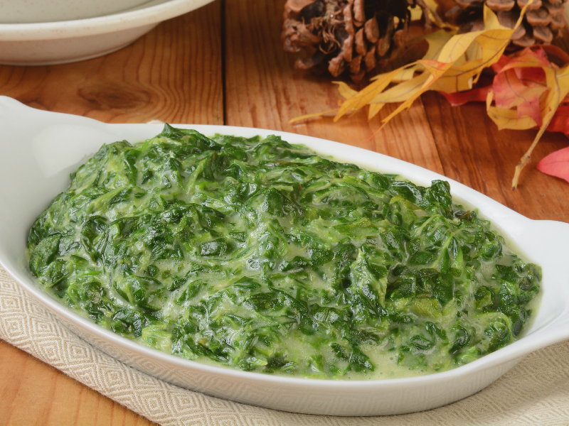

Creme de Espinafre
Ingredientes
1 maço de espinafre (aquele comprado em sacolão, tire os cabinhos e utilize só as folhas
picadas)
1/2 cebola em cubinhos
1 dente de alho amassado
1/2 colher de sopa de manteiga
1/2 xícara de parmesão ralado grosseiramente
4 fundos de alcachofra picados
1/2 copo de requeijão cremoso
Sal a gosto
Pimenta do Reino a gosto
Nachos ou Doritos
Modo de Preparo
Em uma panela média, disponha a manteiga o alho e a cebola, refoque até que a cebola fique
transparente
Acrescente o espinafre picadinho, e misture até que ele murche por completo, junte a alcachofra
picada,acrescente o requeijão cremoso, a pimenta do reino e acerte o sal.
Se ficar muito grosso acrescente um pouco de leite integral, desligue o fogo junte o parmesão e
misture bem.